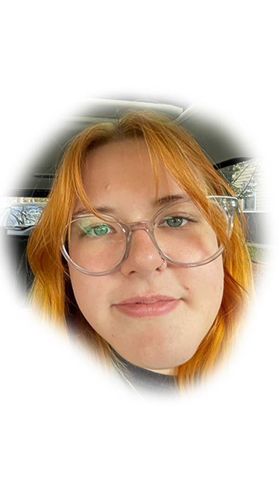

Welcome Home
My name is Darien Ridenour. I sit somewhere at the intersection
of art and journalism. My practice manifests itself in essay
writing, comics, podcasting, and illustrating. I orginated from
the cornfields of Indiana and now I find myself in the concrete
jungle of Chicago. I am very excited to be done with school, at
least for now. Homework is exhausting. I am tired of owing people
things.